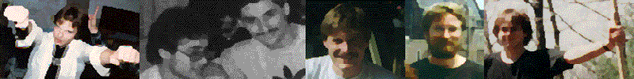

A VERY simple dice game for very simple people.

Kill the Other Guy (KtOG) was born in about 1987 when Nate and some of his friends were spending most of their time hiking in the woods and otherwise enjoying the out of doors. As gaming fanatics, their conversations were usually filled with the exploits of the previous nights marathon session wherein this or that character had had a particularly good or bad time of it.
They normally carried dice with them, usually by accident having forgotten them in one of the many pockets of an old army jacket, so it is natural that something like this game might develop. Normally the game is played on the move, hiking near or standing by admiring some beautiful outdoor scenery. Although this is hardly necessary to play the game, it is certainly part of it to Nate’s mind as he would probably be playing something requiring books and figures if he were sitting comfortably at home! Dice were “rolled” by shaking the die in the hand, placing the thumb over a face and removing the thumb to reveal the number.
Yes, there was a certain amount of trust involved here, and this may be why the group often ended up huddled in a circle flipping their thumbs madly and peering with furrowed brows at each others lucky (or unlucky) dice “rolls” as they got nearer the end of each game! Nate took a rather lengthy break from KtOG after about 1992, but when he found the rules written neatly in an old black and white composition notebook, he knew he had to type them in to preserve them. As simple as it is, Nate can say with some assurance that it has been well play tested, and near the end the group only squabbled about the outcome every OTHER time!
Todd and Nate worked on some rules clarifications during one of Todd’s trips back from Pennsylvania in 1999. At this time the rules were kept in a Microsoft Word document which was printed as a PDF for distribution to anyone interested.
Sometime later in 1999 Seth and Nate worked on converting KtoG into a card-based game. Nate created some sample cards and started work on the rules (largely based on KtoG). The ‘KtOG II – the card game’ page is as far as we got. Nate still carries a couple of the cards around in his wallet for some reason.
In about 2000 Nate began keeping a copy of the PDF rules for download on his personal website (hosted on AT&T). In 2003, the PDF got moved to in8sworld.net. In 2006 he decided to use Mediawiki software to create a dedicated website for KtOG and maintain the rules online. Chinese spammers defaced the wiki site in late 2007, and it was decided to continue to maintain the rules online using WordPress instead.
Nate and Rob played some games in Dec. 2010 and made a couple rule changes.
Ned created the KtOG android app but is only available privately as "early access" in the Google Play store as of 2019. Nate still has it on his phone and plays occassionally! You can even use it to play against a friend if you're on the same local network.
Emily published a KtOG discord bot written in python on github in 2021. Some assembly required! We'll link to the official KtOG discord server when its ready! Nate converted the site to static HTML in late 2021 since Wordpress was just overkill for a four page website.